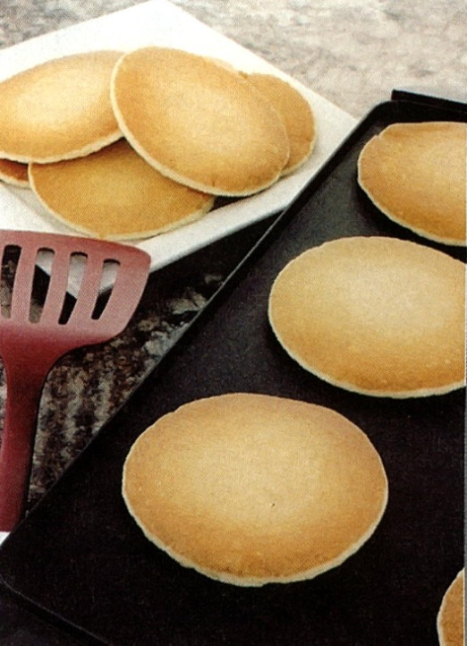
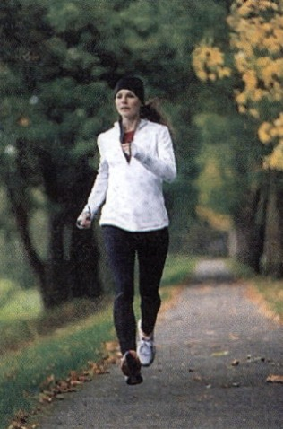
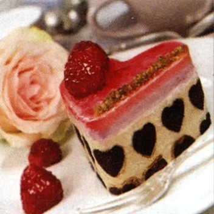
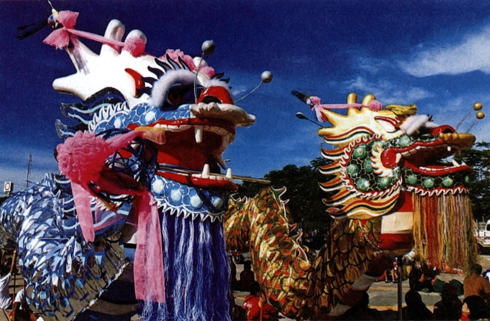
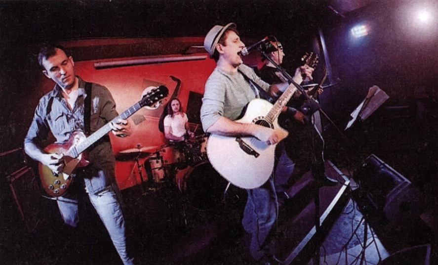
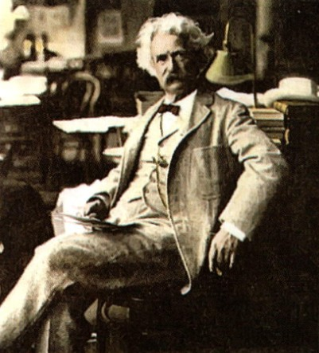

Chapter 4: A Good Day (pp. 70–84)
In this chapter, you will write about someone in your class, and someone will write about you. To get the information you need, you will interview each other. That means you will ask each other questions. Then you will write paragraphs about each other.
The writing models are about two students, Karl and Tomiko. Tomiko interviewed Karl and wrote about what he usually does on Fridays. Karl interviewed Tomiko and wrote about what she usually does on Saturdays.
Work with a partner or in a small group. Read the models. Then answer the questions.
✏️ Writing Model 1
Karl's Fridays are always busy days. He gets up early. Then he works from 6:00 a.m. to 2:30 p.m. After work, he gets his little boy from daycare. Sometimes they go shopping or play in the park. Then they go home. Karl's wife gets back from work at 5:30 p.m. They usually have dinner at home. In the evening, Karl puts his son to bed. Then he finally has time to relax. He and his wife sometimes watch a movie, but they do not stay up late. Karl is tired after his long day.
Questions about the Model
- ✓what Karl does in the morning
- ✓what he does in the afternoon
- ✓what he does in the evening
- how he feels about Fridays
✏️ Writing Model 2
Saturday is Tomiko's favorite day of the week. In the morning, she always sleeps in. Sometimes she does not get up until noon. Then she usually meets her friends in the dining hall. In the afternoon, they spend time outside or go shopping. It depends on the weather. On Saturday evenings, she likes to dress up and go out. She and her friends often eat out, see a movie, or go to a party. Tomiko loves Saturdays.
Questions about the Model
- ✓what Tomiko does in the morning
- ✓what she does in the afternoon
- ✓what she does in the evening
- ✓how she feels about Saturdays
✏️ Looking at Vocabulary: Phrasal Verbs
A phrasal verb has two parts: a verb (such as go or get) and a particle (such as up, on, or out). The meaning of a phrasal verb is often very different from the meaning of the verb alone.
A Find these phrasal verbs in the writing models and underline them.
B Match the phrasal verbs from the box with their meanings. Fill in the blanks.
When you write a paragraph, you must think about organization. You must plan how to present information in a clear order. Writers need to organize information to make it easy for people to read. There are many ways to do this.
One way to organize information is to put it in time order (also called chronological order). This means writing about events in the order in which they happen. Start with the first or earliest event, and then tell what happens after that.
Time-order words help make information clear to the reader. They go at the beginning of sentences. A comma follows each one except Then. Do not put a comma after Then.
A Work alone or with a partner. Read the sentences. Then number them from 1 to 9 in time order.

Pancakes on the griddle
B Write the sentences from Part A as a paragraph.
Martin likes to makeMartin likes to make pancakes for his children on Sunday mornings. First, he puts the griddle on the stove to heat up. Next, he gets out the eggs, milk, flour, and other ingredients. He mixes the ingredients in a large bowl. Then he pours spoonfuls of pancake batter onto the hot griddle. He turns the pancakes so they cook on both sides. Finally, he calls the children. They all sit down and enjoy a delicious breakfast. Later, everyone will help clean up.Work alone or with a partner. Complete the paragraph with words from the box. For some sentences, there may be more than one possible choice.

Simone has a regular routine on Saturday mornings. She always gets up around 8:00 a.m. 1 First / After that, she stretches and does some yoga. 2 After that / Next, she puts on her running shoes and goes for a run. 3 After that / Next, she cools down by walking to a coffee shop. She orders coffee and drinks it on her way home. At home, she takes a shower and gets dressed. 4 Then she sits down and makes a list of things she needs to do that day. 5 Finally / After that, she feels ready to start the day. 6 Later / Finally, she will call a friend and make plans for the evening.
There are several kinds of sentences in English. Understanding sentence patterns will help you write correct sentences.
First, there are simple sentences. A simple sentence has one subject-verb combination. Look at these two patterns for simple sentences:
One or more subjects with the same verb means one subject-verb combination.
Circle the verbs and write V above them. Underline the subjects and write S above them.
Meanings
Adverbs of frequency tell how often something happens.
| How often do they eat breakfast? | Sun | M | Tu | W | Th | F | Sat | |
|---|---|---|---|---|---|---|---|---|
| Alex always eats breakfast. | ✓ | ✓ | ✓ | ✓ | ✓ | ✓ | ✓ | 100%0% |
| Uma usually eats breakfast. | ✓ | ✓ | ✓ | ✓ | ✓ | ✓ | ||
| Olivia often eats breakfast. | ✓ | ✓ | ✓ | ✓ | ||||
| Saeed sometimes eats breakfast. | ✓ | ✓ | ||||||
| Norberto never eats breakfast. |
Use almost with always or never to change the meaning to “nearly 100% of the time” or “nearly 0% of the time.”
I almost never eat breakfast in a restaurant. I do that about once a year.
Placement in Affirmative Statements
The rules in the chart tell where to put an adverb of frequency in an affirmative statement.
| Rules | Examples | ||||||||
|---|---|---|---|---|---|---|---|---|---|
| 1. In most affirmative statements: Put the adverb before the verb. |
|
||||||||
| 2. In affirmative statements with be: Put the adverb after the verb be. |
|
The adverb of frequency sometimes can also come at the beginning or end of an affirmative statement.
Sometimes Jeremy is early.
Jeremy is early sometimes.
Rewrite each affirmative statement. Add the adverb in parentheses.

Valentine's Day is always on February 14.
People usually think of Valentine's Day as a holiday for people in love.
The dates of some holidays always change, depending on the moon.
Some people never celebrate the new year on January 1.
Mother's Day is usually a popular holiday.
Schools are often closed on holidays.
Workers often have a holiday in their honor.
Some women never work on International Women's Day.
Rewrite each statement three times. Add sometimes in three different places.
My family sometimes has a special holiday meal.
Sometimes my family has a special holiday meal.
My family has a special holiday meal sometimes.
Stores are sometimes closed on holidays.
Sometimes stores are closed on holidays.
Stores are closed on holidays sometimes.
Placement in Negative Statements
The rules in this chart tell where to put an adverb of frequency in a negative statement.
| Rules | Examples | ||||||||
|---|---|---|---|---|---|---|---|---|---|
| 1. Put the adverbs always, usually, and often after not. |
|
||||||||
| 2. Put sometimes at the beginning of a negative statement. | Sometimes he does not call. | ||||||||
| 3. Do not use not with never. | He is never ready on time. NOT: He isn't never ready on time. |
Rewrite each negative statement. Add the adverb in parentheses.
I am never at home on New Year's Eve.
People in different countries do not always have the same holidays.
Halloween is usually not an important holiday outside the United States.
Father's Day is never on a weekday in the United States.
Some businesses never close on holidays.
For example, airports do not often close on holidays.
People do not usually celebrate every holiday in the same way.
In some countries, birthdays are not usually special days.

Happy New Year!
Look at the activities in the list. How often do you do these things? Take a sheet of paper, and write a true statement with an adverb of frequency about each activity.
- watch the evening news on TV
- drink milk
- get hungry in class
- be tired in class
- write letters
- go shopping on weekends
- be in a bad mood
A preposition, such as in, at, by, or with, goes in front of a noun. The preposition and noun form a prepositional phrase. Prepositional phrases have many uses. For example, they can identify a place (at home, in South America) or a direction (to school, up the stairs).
Prepositional phrases can also be time expressions. Time expressions tell when something happens.
A time expression can go at the beginning or at the end of a sentence. Put a comma after a time expression at the beginning of a sentence.
Here are five rules you need to know for using prepositions to show time.
| Rules | Examples |
|---|---|
| 1. Use on + a day or days. | Do we have class on Friday? They see each other on weekends. |
| 2. Use in + a part of the day. Exception: Use at + night. |
Call me in the morning. He gets home late at night. |
| 3. Use at + a time. | He starts work at 8:30 a.m. Lunch is at noon. |
| 4. Use from + a starting point + to + the end point. | From 7:00 to 10:00 p.m., he studies. The course runs from January to May. |
| 5. Use for + an amount of time. | They will be on vacation for a week. |
See pages 99–100 and 160–162 for more information on prepositions.
Underline six more time expressions with prepositions.
The Music of Fame in Cleveland, Ohio, welcomes music fans 363 days a year. The hall is closed only on Thanksgiving and Christmas. It is usually open from 10:00 a.m. to 5:30 p.m. On Wednesdays, it is also open in the evening. In the summer (from Memorial Day to Labor Day), it stays open late on Saturdays, too. There are exhibits, films, concerts, and a museum store. Each year, half a million people visit the Rock and Roll Hall of Fame. It is great fun for music fans.

Complete the time expressions in the sentences. Use the prepositions at, for, from, in, on, and to.
Some words in English must begin with a capital letter. Here are five rules for capital letters that writers need to know.
| Rules | Examples |
|---|---|
| 1. Capitalize the subject pronoun I. | Rosa and I are in the same class. |
| 2. Capitalize the first letter of a sentence. | His first name is David. |
| 3. Capitalize people's names and titles. | My dentist's name is Dr. Parker. |
| 4. Capitalize words for nationalities and languages. | Nationalities
Australian Colombian Kuwaiti Languages
English Spanish Arabic |
| 5. Capitalize place names. | She lives in the Dominican Republic. |
Find one or more capitalization errors in each sentence. Make corrections.
Work alone or with a partner. Look at the five rules for capitalization in the chart on page 81. Write two sample sentences for each rule.
My brother and I play soccer on Sundays.
I am a student at this school.
Today is a sunny day.
My class starts at nine o'clock.
My teacher's name is Ms. Rivera.
Dr. Lee is my family doctor.
My neighbor is Japanese.
Many people in Canada speak French.
My cousin lives in Toronto, Canada.
Lake Michigan is near Chicago.
Follow these rules for using capital letters in the titles of your paragraphs.
| Rules | Examples |
|---|---|
| 1. Capitalize the first letter of the first word of a title. | My Life The Best Day of My Life |
| 2. Capitalize every noun, verb, pronoun, adjective, and adverb in a title. Do not capitalize a, an, the, or prepositions. | A Day at the Races Take Me Out to the Ball Game |
| 3. Do not put a period (.) after the title of a paragraph. | Getting Ready for the Day. |
| 4. Do not put quotation marks (“ ”) around the title of a paragraph. | “Jae Yoon's Favorite Day” |
Rewrite each title with the capital letters needed.

Mark Twain, author of The Adventures of Tom Sawyer
The Adventures of Tom Sawyer
Harry Potter and the Chamber of Secrets
A Tale of Two Cities
Around the World in Eighty Days
The Good, the Bad, and the Ugly
A Journey to the Center of the Earth
✏️ Applying Vocabulary: Using Phrasal Verbs
You saw some common phrasal verbs used in the writing models on pages 70 and 71:
You may want to use some of those phrasal verbs when you do the Writing Assignment on page 84, writing about one day in a classmate's week.
A Complete the sentences with phrasal verbs from the box above.
B Take a sheet of paper. Write six or more true sentences about what you do on Saturdays. In each sentence, use a phrasal verb from the box on page 83 and an adverb of frequency.
On Saturdays, I never sleep in.
I do not usually eat out on Saturdays.